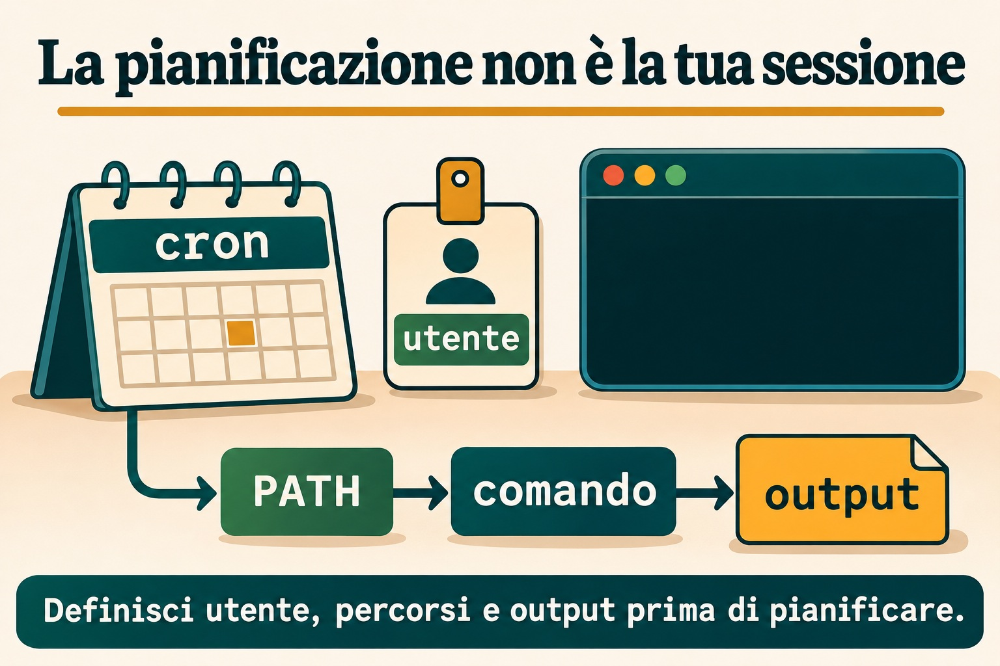
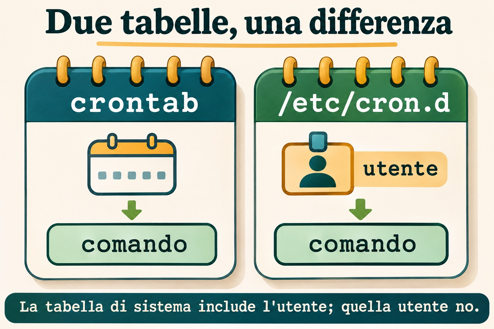
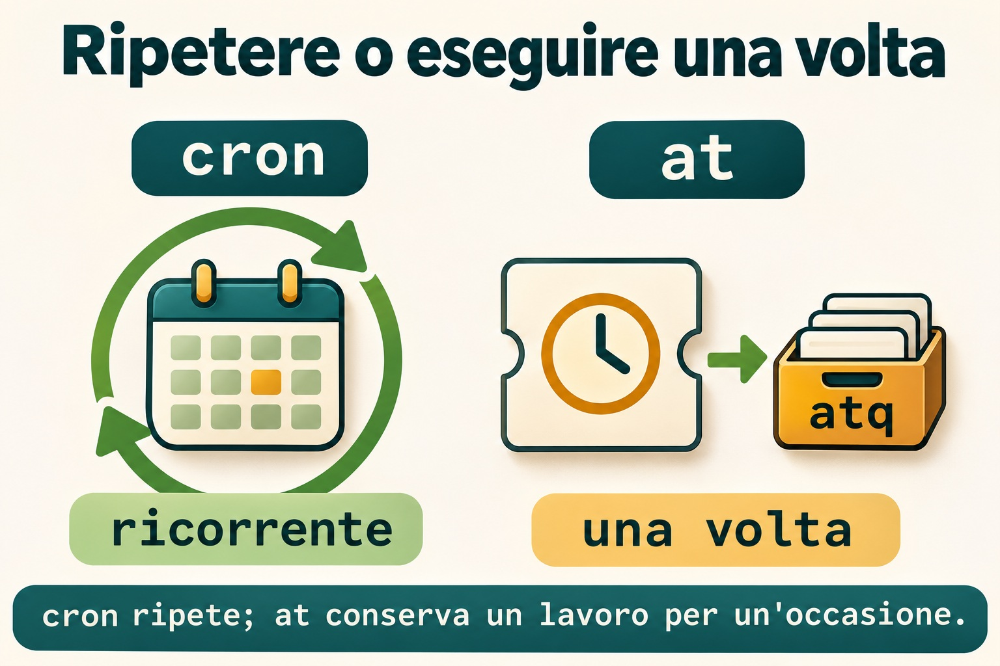

Lezione 14.1 · cron e at
Nell'Utilità di pianificazione di Windows controlli account, azione e risultato. Su Linux la stessa disciplina evita lavori che funzionano nel terminale e falliscono da soli. Creerai pianificazioni dedicate, conserverai quelle esistenti e distinguerai ripetizione ed esecuzione unica.
Il cuore di questa lezione: una pianificazione richiede utente, ambiente, comando ed evidenza dell'esecuzione. cron ripete; at esegue una volta. Il resto è approfondimento.
| Scheda | |
|---|---|
| Modulo | M14 · Pianificazione, log e ora, lezione 1 di 5 |
| Quando | Settimana 19 |
| Alla fine | Installi pianificazioni senza cancellare lavori altrui e verifichi l'esecuzione dal risultato |
| Prerequisiti | M13 completato; student, sudo, noVNC e SSH sulle VM 201 e 202 |
| Durata | Circa 90 minuti |
| Snapshot | m14a1-inicio e m14a1-fim sulle due VM |
1 · Riscaldamento
Rispondi prima di consultare i comandi.
- Perché un permesso DAC corretto non garantisce ogni operazione di un processo confinato?
- Qual è la differenza tra abilitare e avviare un servizio?
- Come distingui una configurazione salvata da un'esecuzione realmente avvenuta?
2 · Perché conta
Il rapporto giornaliero non è comparso. Il comando funziona quando entri tramite SSH, ma dipende dalla directory corrente e da una variabile della sessione. Il pianificatore non ha aperto il tuo terminale interattivo. La diagnosi parte dall'ambiente e dall'utente, non dal riavvio della macchina.
Una pianificazione può anche essere corretta con il servizio fermo. Registra tre evidenze: voce installata, pianificatore attivo e file o log prodotto dal lavoro.
3 · Modello mentale
Pensa alla portineria: l'elenco degli orari fa chiamare qualcuno, ma il badge definisce chi esegue. La scheda del lavoro deve contenere il percorso completo, senza dipendere da ciò che era aperto sulla scrivania di un'altra persona.
pianificazione -> pianificatore attivo -> utente -> comando -> evidenza
cron: ripetizione at: una occasione

Ponte Windows
| Windows | Linux |
|---|---|
| Trigger ricorrente | cron |
| Eseguire una volta | at |
| Account dell'attività | Proprietario della crontab o campo utente di sistema |
| Cronologia e risultato | Output acquisito, journal e file prodotto |
4 · L'essenziale
Cinque campi di tempo
L'ordine è minuto, ora, giorno del mese, mese e giorno della settimana. Poi viene il comando. Usa uno script per logica e formattazione; una riga di pianificazione lunga è difficile da rivedere.
* * * * * comandoL'asterisco in tutti i campi significa ogni minuto. Giorno del mese e giorno della settimana hanno un'interazione importante: quando entrambi sono limitati, cron tradizionale esegue quando corrisponde uno dei due.
Utente e sistema
crontab -e modifica la tabella dell'utente stesso. I file in /etc/cron.d aggiungono un campo utente tra calendario e comando. Non inserire quel campo nella tabella utente.


Ambiente e output
Definisci percorsi assoluti. Acquisisci output ed errori. Il carattere % ha un trattamento speciale in una riga cron; lascia le formattazioni della data dentro lo script per evitare il problema.
Esecuzione unica e accesso
at conserva un lavoro per un istante futuro. atq mostra la coda; atrm rimuove un identificatore specifico. I file cron.allow, cron.deny, at.allow e at.deny controllano chi può usare questi strumenti secondo l'implementazione.
Limitare lo strumento non elimina automaticamente lavori già installati. In questa lezione osservi i controlli esistenti; non modifichi elenchi condivisi per introdurre un guasto.


Rocky × Debian
| Voce | Rocky 9 | Debian 13 |
|---|---|---|
| Pacchetto cron tradizionale | cronie | cron |
| Unità | crond.service | cron.service |
| Esecuzione unica | Pacchetto at, unità atd.service | Pacchetto at, unità atd.service |
| Alternativa installata | Identifica il gestore attuale | Non sostituire systemd-cron senza pianificare |
5 · Lab guidato
Esegui tutto sulle due VM. Conferma che la home di student sia /home/student, che l'utente possa usare crontab e at e che non ci siano altre modifiche simultanee alle sue pianificazioni durante l'esercizio.
Passo 1 · Preparare la protezione
Ipotesi: installare cron dimostra che un lavoro sia stato eseguito?
Sull'host Proxmox:
qm snapshot 201 m14a1-inicio
qm snapshot 202 m14a1-inicioSu Rocky usa il primo blocco. Su Debian conferma prima che il lab usi cron tradizionale e usa il secondo.
sudo dnf install -y cronie at
sudo systemctl enable --now crond atdsudo apt install -y cron at
sudo systemctl enable --now cron atdOutput atteso: servizi attivi. I pianificatori installati restano disponibili come strumenti del corso; la pulizia rimuoverà soltanto i lavori di esercizio.
Verifica: controlla l'unità corretta con systemctl is-active e la home con getent passwd student. Se esiste un altro gestore delle pianificazioni, fermati e correggi la preparazione.
Passo 2 · Verificare il lavoro fuori dalla pianificazione
Ipotesi: come dimostri che il lavoro venga eseguito come student?
Conferma l'assenza dei percorsi prima di crearli.
test ! -e "$HOME/m14a1"
sudo test ! -e /usr/local/libexec/m14a1-tick
sudo test ! -e /etc/cron.d/m14a1
mkdir -m 700 "$HOME/m14a1"
sudo install -d /usr/local/libexec
sudo tee /usr/local/libexec/m14a1-tick > /dev/null <<'EOF'
#!/bin/sh
/usr/bin/date -Is
/usr/bin/id -un
EOF
sudo chmod 755 /usr/local/libexec/m14a1-tick
/usr/local/libexec/m14a1-tickOutput atteso: data reale della VM e utente student. Non c'è una data inventata da copiare.
Verifica: esegui lo stesso percorso assoluto che verrà usato dalla pianificazione.
Passo 3 · Installare una voce dell'utente
Ipotesi: installare una tabella con una sola riga cancella le righe precedenti?
Salva la tabella attuale. Se non esiste una tabella, crontab -l lo segnala e restituisce un errore; il file di riferimento resta vuoto. Un rifiuto di permesso è un'altra situazione e va risolto prima.
crontab -l > "$HOME/m14a1/crontab.inicio"
cp "$HOME/m14a1/crontab.inicio" "$HOME/m14a1/crontab.candidate"
cat >> "$HOME/m14a1/crontab.candidate" <<'EOF'
# BEGIN m14a1
* * * * * /usr/local/libexec/m14a1-tick >> /home/student/m14a1/user.log 2>&1
# END m14a1
EOF
diff -u "$HOME/m14a1/crontab.inicio" "$HOME/m14a1/crontab.candidate"Controlla che sia stato aggiunto soltanto il blocco di esercizio. Poi installa la candidata:
crontab "$HOME/m14a1/crontab.candidate"
crontab -lOutput atteso: tabella precedente conservata e nuovo blocco presente. Dopo un cambio di minuto con il servizio attivo, user.log riceve il risultato.
Verifica: leggi tail "$HOME/m14a1/user.log"; l'esistenza della voce da sola non dimostra l'esecuzione.
Decidi 1
| Opzione | Per aggiungere un'attività senza perdere le altre |
|---|---|
| A | Installare una tabella che contiene soltanto la nuova attività |
| B | Rivedere una candidata con le voci precedenti e il nuovo blocco |
| C | Eliminare prima tutta la tabella |
Scegli B. L'installazione sostituisce la tabella; la candidata deve contenere ciò che vuoi conservare.
Passo 4 · Creare la pianificazione di sistema dedicata
Ipotesi: dove compare l'utente in questa variante?
sudo tee /etc/cron.d/m14a1 > /dev/null <<'EOF'
SHELL=/bin/sh
PATH=/usr/bin:/bin
* * * * * student /usr/local/libexec/m14a1-tick >> /home/student/m14a1/system.log 2>&1
EOF
sudo chmod 644 /etc/cron.d/m14a1
sudo chown root:root /etc/cron.d/m14a1Output atteso: dopo un cambio di minuto, system.log mostra il risultato eseguito come student. Non serve riavviare cron per ogni file corretto aggiunto.
Verifica: confronta i due log e individua il campo aggiuntivo nel file di sistema.
Passo 5 · Eseguire una volta con at
Ipotesi: chiudere il terminale rimuove un lavoro già accettato da at?
printf '/usr/local/libexec/m14a1-tick >> /home/student/m14a1/once.log 2>&1\n' > "$HOME/m14a1/once.job"
LC_ALL=C at -f "$HOME/m14a1/once.job" now + 2 minutes 2> "$HOME/m14a1/at.receipt"
cat "$HOME/m14a1/at.receipt"
atqOutput atteso: ricevuta con l'identificatore reale e lavoro in coda. Dopo l'orario esce dalla coda e produce once.log.
Verifica: confronta ricevuta, coda e file prodotto. L'accettazione in coda non conferma il successo del comando.
Decidi 2
| Opzione | Il lavoro è stato accettato, ma manca il risultato |
|---|---|
| A | Cambiare i permessi per permettere a tutti di scrivere |
| B | Reinviare varie copie senza controllare |
| C | Controllare orario, coda, servizio e output del lavoro |
Scegli C. L'evidenza di consegna al pianificatore e quella dell'esecuzione sono diverse.
Passo 6 · Verificare accesso e persistenza
Ipotesi: vietare l'uso di uno strumento ne elimina i lavori esistenti?
Osserva i controlli già esistenti senza modificarli. Un percorso assente è un'informazione sulla configurazione.
sudo ls -l /etc/cron.allow /etc/cron.deny /etc/at.allow /etc/at.deny
crontab -l
atq
sudo systemctl rebootOutput atteso: dopo il reboot cron attivo continua a usare le voci installate. Il lavoro at già completato non ricompare come ricorrente.
Verifica: leggi le nuove date nei due log. Non modificare l'orologio per accelerare il test.
6 · Rompi e ripara
Guasto 1 · Lavoro senza esecuzione consentita
Sintomo: passa il minuto, ma l'attività registra un errore invece dell'output normale.
Indagine: rimuovi l'esecuzione soltanto dallo script dedicato e prova manualmente lo stesso percorso.
sudo chmod 644 /usr/local/libexec/m14a1-tick
/usr/local/libexec/m14a1-tick
tail "$HOME/m14a1/user.log"Causa: la pianificazione richiama un eseguibile senza permesso di esecuzione.
Riparazione: ripristina sudo chmod 755 /usr/local/libexec/m14a1-tick.
Verifica: esegui manualmente e controlla il prossimo output pianificato.
Prevenzione: verifica con lo stesso utente e tramite lo stesso percorso della pianificazione.
Guasto 2 · Campo utente assente
Sintomo: la tabella utente funziona, ma il file di sistema smette di generare nuovi risultati.
Indagine: salva il file dedicato e rimuovine soltanto il campo obbligatorio.
sudo cp -a /etc/cron.d/m14a1 "$HOME/m14a1/cron.d.good"
sudo sed -i 's/\* student /\* /' /etc/cron.d/m14a1
sudo cat /etc/cron.d/m14a1Causa: cron interpreta la posizione dell'utente secondo il formato di sistema, non quello della crontab personale.
Riparazione: ripristina soltanto il file dedicato con sudo cp -a "$HOME/m14a1/cron.d.good" /etc/cron.d/m14a1.
Verifica: dopo il prossimo cambio di minuto system.log torna a crescere.
Prevenzione: controlla il formato della destinazione prima di incollare una riga pianificata.
Guasto 3 · Lavoro annullato prima dell'orario
Sintomo: un nuovo lavoro at non produce il risultato perché lo hai rimosso dalla coda.
Indagine: invia di nuovo once.job, annota l'identificatore della nuova ricevuta e controlla il contenuto con at -c prima di rimuoverlo. Non usare un numero di esempio.
at -f "$HOME/m14a1/once.job" now + 5 minutes
atq
read -r -p 'Own job ID: ' ATJOB
at -c "$ATJOB"Conferma che sia il lavoro di student appena creato e soltanto dopo esegui atrm "$ATJOB".
Causa: l'assenza di risultato corrisponde all'annullamento, non a un guasto del servizio.
Riparazione: se il lavoro serve ancora, invia una sola nuova copia.
Verifica: controlla il nuovo identificatore e il risultato dopo l'orario.
Prevenzione: registra identificatore, orario e stato senza eliminare tutta la coda.
Pulizia
Rimuovi soltanto il blocco marcato dalla tabella attuale. Rivedi il diff prima di installare la tabella pulita; le altre voci devono restare.
crontab -l > "$HOME/m14a1/crontab.atual"
sed '/^# BEGIN m14a1$/,/^# END m14a1$/d' "$HOME/m14a1/crontab.atual" > "$HOME/m14a1/crontab.clean"
diff -u "$HOME/m14a1/crontab.atual" "$HOME/m14a1/crontab.clean"Dopo aver verificato la rimozione esclusiva del blocco:
crontab "$HOME/m14a1/crontab.clean"
sudo rm -f /etc/cron.d/m14a1 /usr/local/libexec/m14a1-tick
atqAnnulla soltanto lavori di esercizio ancora in attesa, tramite l'identificatore verificato. Conserva i registri; una tabella vuota rimasta non esegue lavori.
7 · Trappole
| Errore | Che cosa fare | Motivo |
|---|---|---|
| Dipendere dalla sessione interattiva | Percorsi assoluti e ambiente esplicito | cron non ha aperto il tuo terminale |
| Eliminare la tabella per aggiungere un'attività | Candidata rivista che conserva le voci | Installare sostituisce la tabella |
| Confondere i due formati | Campo utente soltanto nel formato di sistema | L'interpretazione cambia |
| Accettazione significa successo | Controllare l'output del lavoro | Coda e risultato sono evidenze distinte |
8 · Quiz
- Quali sono i cinque campi temporali?
- Dove compare l'utente in
/etc/cron.d? - Perché usare percorsi assoluti?
- Che cosa dimostra
atq? - Rimuovere l'accesso allo strumento elimina i lavori esistenti?
- Che cosa va conservato quando pulisci una pianificazione?
9 · Promemoria
| Operazione | Comando |
|---|---|
| Elencare la tabella personale | crontab -l |
| Modificare la tabella personale | crontab -e |
| Elencare la coda singola | atq |
| Ispezionare il lavoro scelto | at -c "$ATJOB" |
Flashcard: crea cinque schede su formato, utente, ambiente, coda ed evidenza. Ripassa a D+1, D+3, D+7 e D+21.
10 · Checklist e chiusura
- [ ] Ho eseguito lo stesso lavoro manualmente e pianificato.
- [ ] Ho conservato le altre voci e gli identificatori della coda.
- [ ] Ho spiegato le tre cause con evidenze.
Ultimo esercizio: descrivi un rapporto che non dipende da una variabile della sessione e mostra come ne dimostreresti l'esecuzione.
Reboot di verifica: dopo la pulizia riavvia le due VM e conferma che i registri di esercizio non ricevano nuove righe e che le altre pianificazioni restino installate.
sudo systemctl rebootSull'host Proxmox:
qm snapshot 201 m14a1-fim
qm snapshot 202 m14a1-fim11 · Nella vita reale
Su un host autorizzato fai soltanto inventario con crontab -l, atq e la lettura dei file pianificati consentiti al tuo ruolo. Non modificare, reinviare né annullare lavori in questa missione. Individua proprietario, comando, destinazione dell'output ed evidenza dell'ultima esecuzione.
12 · Approfondire quando vuoi
- crontab(5), Debian e crontab(5), cronie: formato e ambiente.
- crontab(1) e at(1): installazione e coda.
DeepTutor (http://10.1.0.149:3782, KB "Curso Linux Sysadmin"):
!explica Compare crontab de usuário, /etc/cron.d e at com foco em usuário e ambiente.!feynman Vou explicar por que um comando funciona no SSH e falha no cron. Critique minha explicação.!quiz Crie seis incidentes de agendamento sem propor apagar agendas existentes.
Soluzioni commentate
Riscaldamento
- DAC e la politica MAC devono consentire l'operazione.
- Abilitare partecipa al boot; avviare cambia lo stato attuale.
- Confronta configurazione, stato del servizio e risultato prodotto.
Quiz
- Minuto, ora, giorno del mese, mese e giorno della settimana.
- Dopo i cinque campi e prima del comando.
- L'ambiente non è la tua sessione interattiva.
- Lavori ancora in coda, non il successo dei lavori completati.
- No; controllo dell'uso dello strumento e lavori installati sono cose diverse.
- Tutte le voci e i lavori che non appartengono all'esercizio.
← Lezione 13.3 · autofs · Indice delle lezioni · Piano del corso: dalla 14.2 in poi →